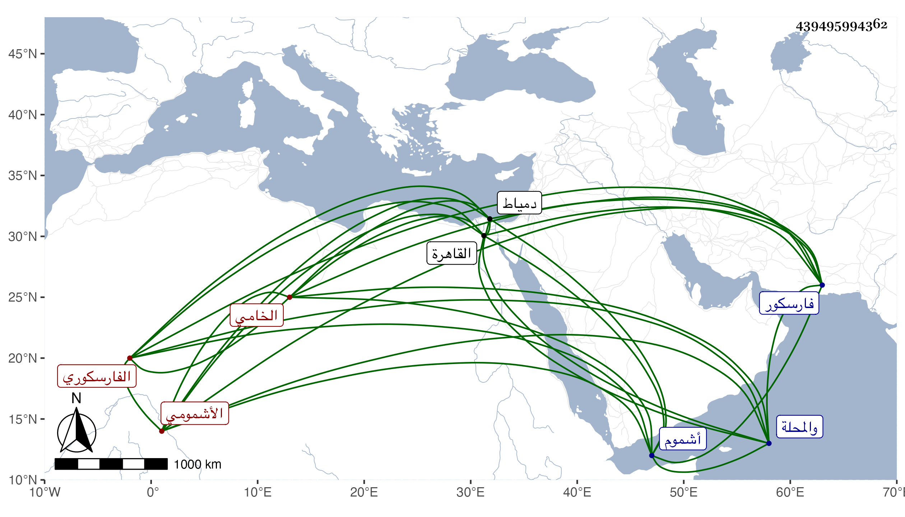

0902Sakhawi.DawLamic.ITO20230111-ara1.EIS1600.439495994362
Biography ID: 439495994362
1007
علي بن محمد بن حسن الأشمومي ثم الفارسكوري الخامي . ولد تقريبا سنة سبعين وسبعمائة بمدينة أشموم ثم انتقل إلى فارسكور وقرأ بها القرآن وارتزق من الحياكة ونظم الكثير مع تقلل جدا وتدين وكثرة صوم وتلاوة وانجماع عن الناس بحيث لم يتزوج قط وله تردد إلى القاهرة ودمياط والمحلة ، وقد لقيه ابن فهد والبقاعي في سنة ثمان وثلاثين فكتبا عنه من قوله :
| إذا سمحت بوصلكم الليالي | فلا خوف علي ولا أبالي |
| ولو أن الحشا والقلب يسلى | بنار الهجر ليس القلب سالي |
| نصيب القوم فازوا بالتملي | أنا المأسور في سجن اعتقالي |
| أيا ليلى فخلي الطيف ليلا | يزور الصب في جنح الليالي |
مات قبل دخولي فارسكور رحمه الله .
